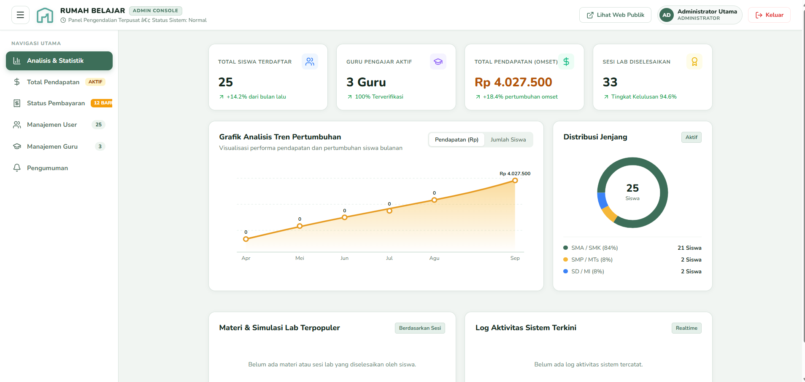
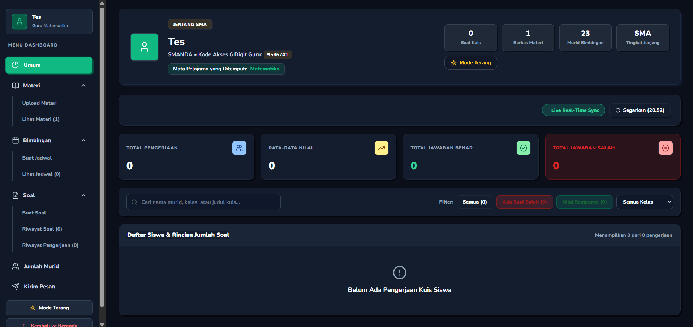
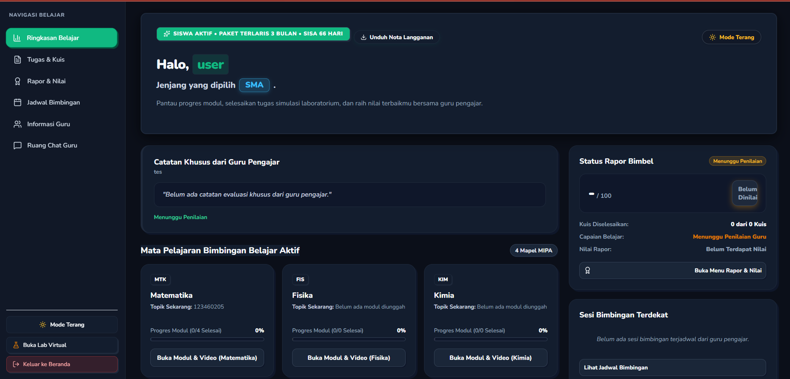

Rumah Belajar MIPA Interaktif
Platform bimbingan belajar dan laboratorium visual interaktif untuk 4 mata pelajaran MIPA (Matematika, Fisika, Kimia, Biologi) jenjang SD, SMP, dan SMA. Dikembangkan dengan arsitektur multi-role (Admin Console, Portal Guru, dan Dashboard Siswa) serta sistem simulasi dinamis dan gamifikasi poin tantangan XP.

Halaman Utama (Landing Page)
Tampilan beranda ramah siswa dengan visualisasi modern, navigasi jenjang (SD, SMP, SMA), highlight 4 mapel MIPA, eksplorasi laboratorium visual, dan tantangan kuis gamifikasi berhadiah XP.

Dashboard Admin Console
Panel pengendalian terpusat untuk monitoring omset pendapatan (Rp 4.027.500), analisis tren pertumbuhan, grafik distribusi jenjang siswa (SMA 84%, SMP 8%, SD 8%), serta manajemen user dan guru.

Dashboard Guru & Pendidik
Ruang kerja pengajar dengan kode akses 6 digit guru, sistem upload berkas materi & video, penjadwalan bimbingan, bank soal kuis, serta live sync statistik pengerjaan kuis siswa secara real-time.

Dashboard Siswa (User Learning)
Portal belajar personal bagi siswa dengan modul aktif 4 Mapel MIPA, progress bar pembelajaran, catatan evaluasi guru, unduh nota langganan, jadwal bimbingan, chat guru, dan akses Lab Virtual.
Inovasi EduTech: Simulasi Interaktif & Tata Kelola Multi-User Terpadu
Projek ini dirancang untuk menjawab tantangan pembelajaran sains (MIPA) yang seringkali dianggap abstrak. Melalui pendekatan laboratorium visual interaktif, siswa dapat memanipulasi parameter rumus secara langsung, mengamati fenomena dinamis, serta meningkatkan retensi materi dengan sistem gamifikasi XP. Seluruh aktivitas terhubung langsung ke dashboard pengajar dan administrator secara real-time.